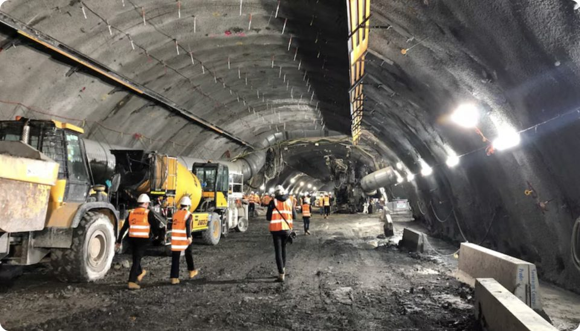
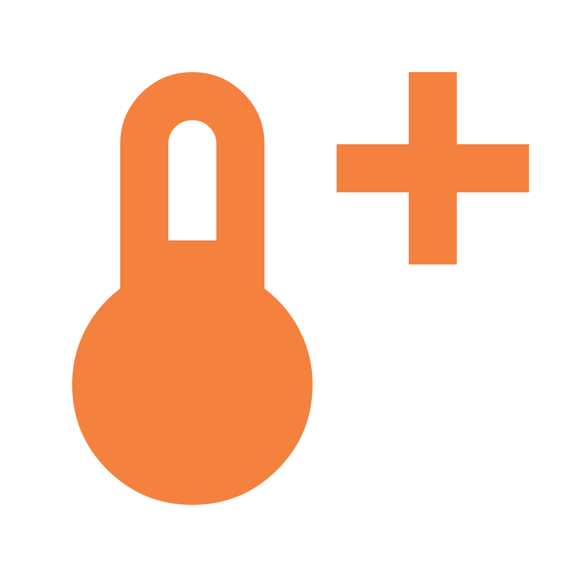
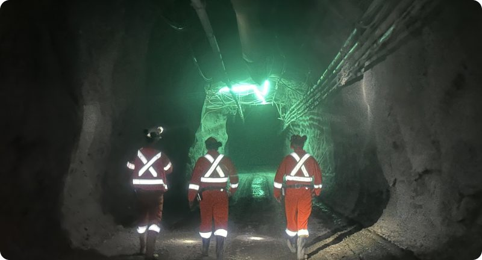
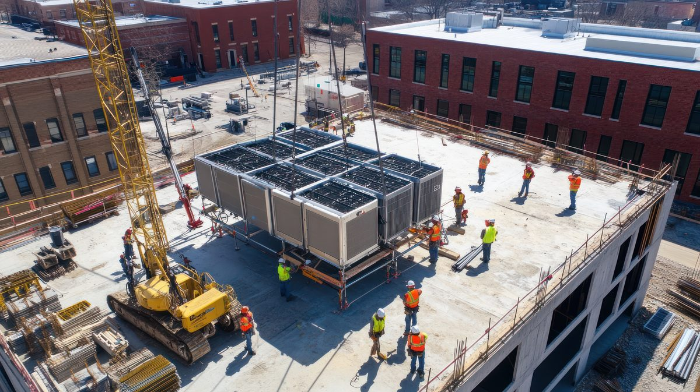
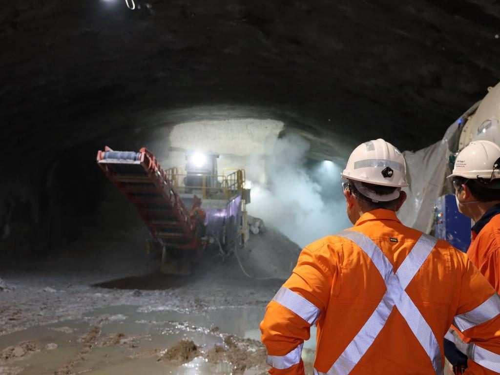
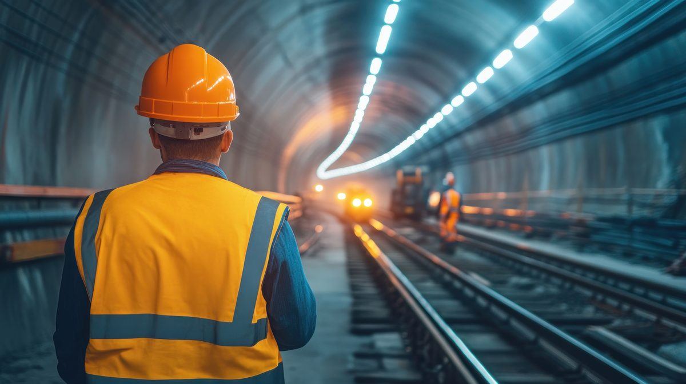
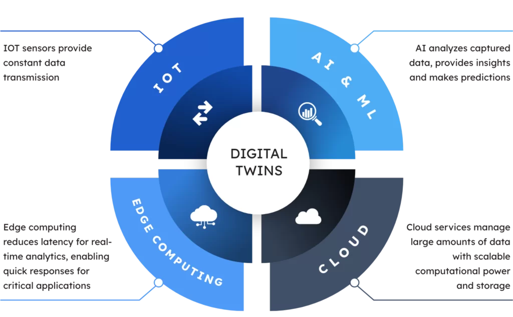
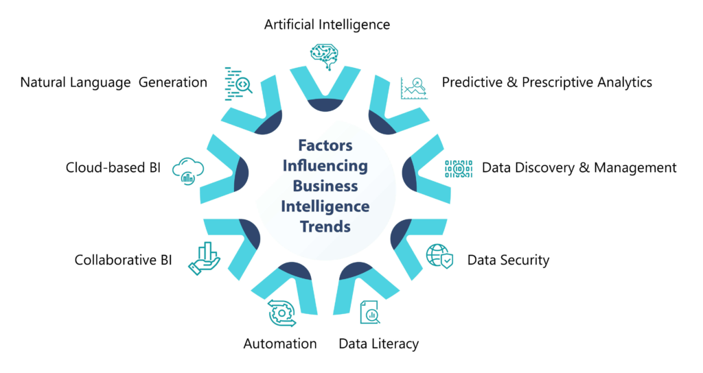

Why serious incidents rarely occur without warning
 June 26
June 26 Solution
Solution
Understanding The Conditions That Exist Before Things Go Wrong
When a serious incident occurs, the investigation process often begins with a simple question:
"What happened?"

The answer is usually clear.
- A vehicle struck a worker.
- A person entered a hazardous area.
- A piece of equipment failed.
- An environmental condition exceeded acceptable limits.
- A fall occurred.
- An explosion occurred.
- An uncontrolled release occurred.
- The event itself is visible.
- The outcome is obvious.
What is often less obvious is that the incident was rarely the first sign of a problem.
Long before the incident occurred, conditions were already changing.
Activities were already interacting.
Exposure was already increasing.
The warning signs often existed.
The challenge was recognising them.
This distinction is becoming increasingly important as organisations seek to move beyond traditional approaches to safety management and develop a deeper understanding of how serious incidents emerge.
The Myth Of The Sudden Incident
Traditional Digital Twins focus primarily on physical assets.
Examples include
Their purpose is typically
Operational Digital Twins
Operational Digital Twins focus on operations
The goal is understanding what is happening across the operation right now.
Why Operational Context Matters
A traditional Digital Twin might tell you:
"The ventilation fan is offline."
An Operational Digital Twin helps explain:
For example:

Temperatures are increasingThis creates operational context.
And operational context supports better decisions.
Digital twin vs operational digital twin
Why Understanding Operations Requires More Than Understanding Assets
The term "Digital Twin" has become increasingly common across industrial environments.
Mining companies are building Digital Twins of processing plants.
Infrastructure owners are building Digital Twins of bridges and tunnels.
Utilities are building Digital Twins of networks and assets.
Manufacturers are building Digital Twins of equipment and production facilities.


While these initiatives are delivering significant value, many organisations are discovering that understanding assets alone does not necessarily create a better understanding of operations.
This distinction is becoming increasingly important as organisations look beyond asset performance and seek greater visibility into the conditions influencing safety, productivity and operational performance.
This is where the concept of the Operational Digital Twin emerges.
Although the terms are often used interchangeably, a Digital Twin and an Operational Digital Twin are fundamentally different.
They solve different problems. They serve different stakeholders.
And ultimately, they create different forms of value.
The Original Purpose Of The Digital Twin
The Digital Twin concept originated from the need to create virtual representations of physical assets.
A Digital Twin provides a digital model of an object, system or piece of infrastructure that can be used to monitor performance, simulate behaviour and support engineering decisions.
Examples include:
- A haul truck.
- A processing plant.
- A tunnel boring machine.
- A bridge.
- An airport terminal.
- A power generation facility.
The purpose is typically to better understand the physical asset itself.
Questions a traditional Digital Twin helps answer include:
These are valuable questions.
In fact, for many organisations, Digital Twins have become essential tools for asset management, maintenance planning and infrastructure optimisation.
However, while Digital Twins provide visibility into physical assets, operations are influenced by far more than assets alone.
Operations Are Not Assets
A mine is not simply a collection of equipment.
A tunnel project is not simply a collection of machinery.
An airport is not simply a collection of buildings and infrastructure.
Operations are dynamic environments shaped by the interaction between people, equipment, vehicles, environmental conditions, production systems and operational activities.
The reality is that many of the decisions that influence operational outcomes have little to do with asset performance.


A production delay may be caused by workforce deployment.
A safety incident may be influenced by environmental conditions.
An operational disruption may result from traffic congestion, access restrictions or changing site conditions.
The physical asset may be functioning perfectly.
Yet operational performance may still be deteriorating.
This is the limitation of traditional Digital Twins when applied to operational environments.
They provide visibility into assets.
They do not necessarily provide visibility into operations.
The Emergence Of The Operational Digital Twin
As organisations became increasingly connected, a new challenge emerged.
The challenge was no longer understanding individual assets.
The challenge became understanding the operation itself.
An Operational Digital Twin is designed to create a live operational representation of the environment.
Rather than focusing primarily on physical assets, it focuses on operational activity.
The goal is to create a shared operational understanding that helps organisations understand what is happening across the operation in real time.
This shift is subtle but significant.
A traditional Digital Twin asks:
"What is happening to the asset?"
An Operational Digital Twin asks:
"What is happening across the operation?"
Understanding Relationships Rather Than Components
Perhaps the most important difference between the two approaches is the concept of relationships.
Traditional Digital Twins are largely concerned with understanding the condition and behaviour of individual assets.
Operational Digital Twins are concerned with understanding interactions.
For example:
A ventilation fan may stop operating.
On its own, that is an equipment issue.
A traditional Digital Twin may identify that the fan is offline.
An Operational Digital Twin goes further.
Operational exposure is increasing.
The value is no longer simply understanding the asset.
The value comes from understanding how conditions across the operation are interacting.
This is operational context.
And operational context is where better decisions are made.
Visibility Versus Understanding
Most organisations already have visibility.
They have dashboards.
Reports.
Control systems.
Fleet management systems.
Environmental monitoring systems.
Production systems.
Workforce systems.
The challenge is rarely a lack of information.
The challenge is understanding how that information fits together.
Traditional Digital Twins contribute another layer of visibility.
Operational Digital Twins contribute understanding.
This distinction becomes increasingly important as operational environments grow more complex.
The more systems an organisation deploys, the greater the need for context.
Without context, visibility becomes fragmentation.
With context, visibility becomes understanding.
The Role Of AI In The Operational Digital Twin
Modern Operational Digital Twins are increasingly supported by artificial intelligence.
Not because organisations need more automation.
But because organisations need help interpreting complexity.
A large mining operation may generate millions of operational events every day.
No individual can realistically interpret every interaction, dependency and emerging condition.
AI helps bridge this gap.
By analysing relationships across operational systems, AI can help identify:
- Emerging operational conditions.
- Developing risks.
- Production constraints.
- Environmental impacts.
- Operational dependencies.
- Recommended actions.

Most importantly, AI can help explain why conditions matter.
Instead of requiring users to interpret multiple dashboards independently, operational information can be translated into clear operational narratives.
This represents a significant evolution from monitoring information to understanding operational impact.
The Future Of Operational Intelligence
Digital Twins will continue to play an important role in engineering, asset management and infrastructure performance.
They are not being replaced.
They are being complemented.
As operations become increasingly connected, organisations require a broader understanding of how operational conditions interact across the environment.

This is the role of the Operational Digital Twin.
It provides the operational context required to support:
- Situational awareness.
- Operational coordination.
- Emergency response.
- Fatal Risk Intelligence.
- Production Intelligence.
- Executive visibility.
And ultimately, better decision-making.
The future of operational technology is unlikely to be defined by more dashboards or more data.
It will be defined by understanding.
Traditional Digital Twins help organisations understand assets.
Operational Digital Twins help organisations understand operations.
For organisations seeking to improve safety, productivity and operational performance,
that distinction may become one of the most important developments in the next generation of operational technology.